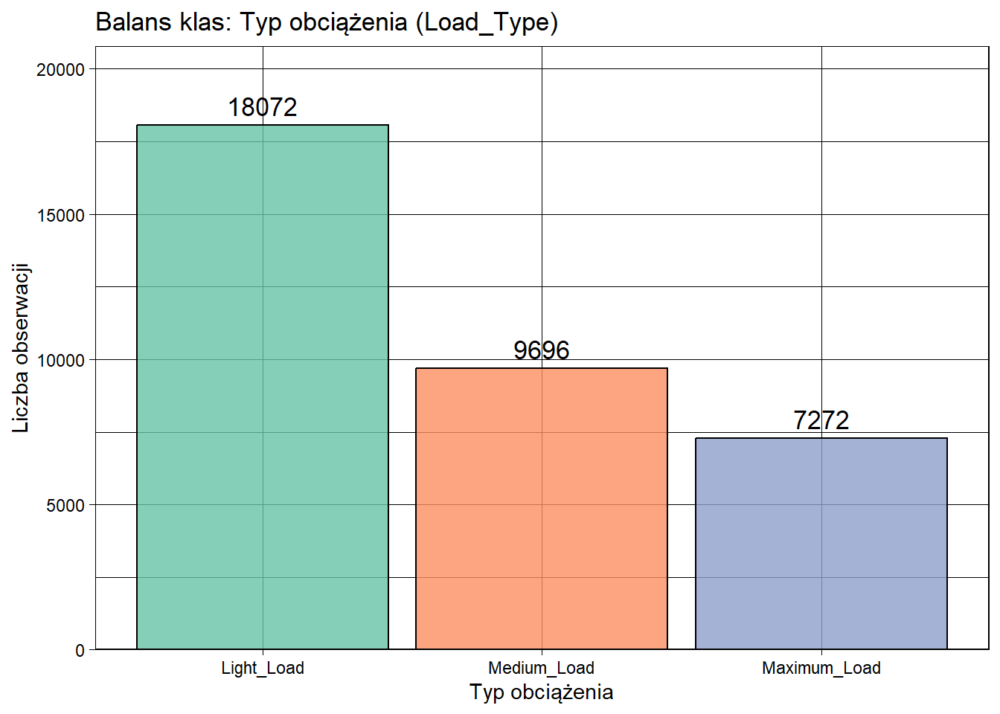
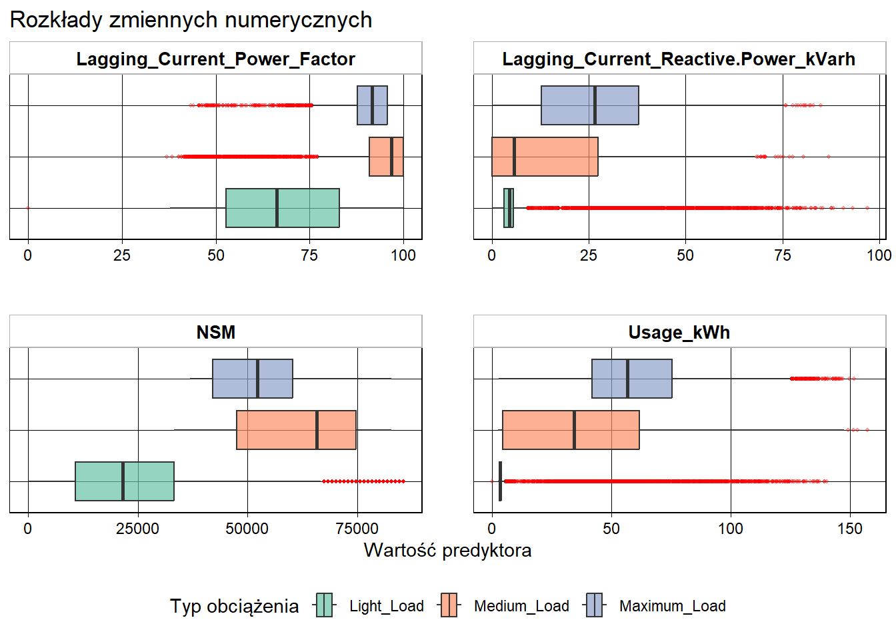
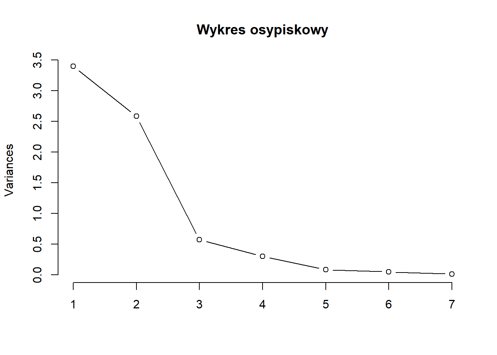
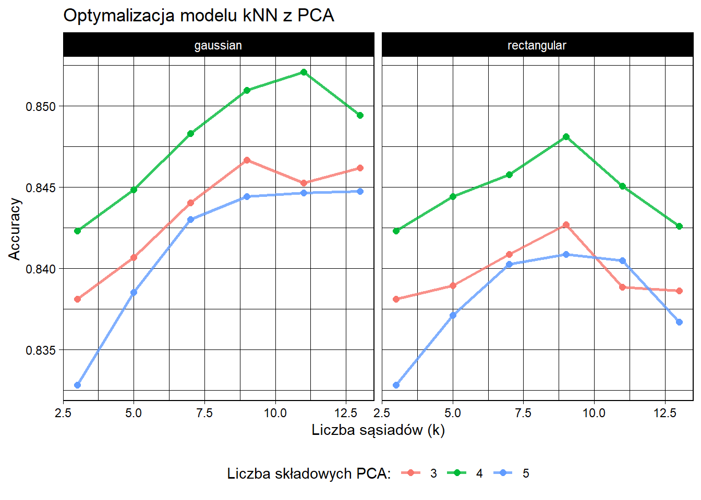
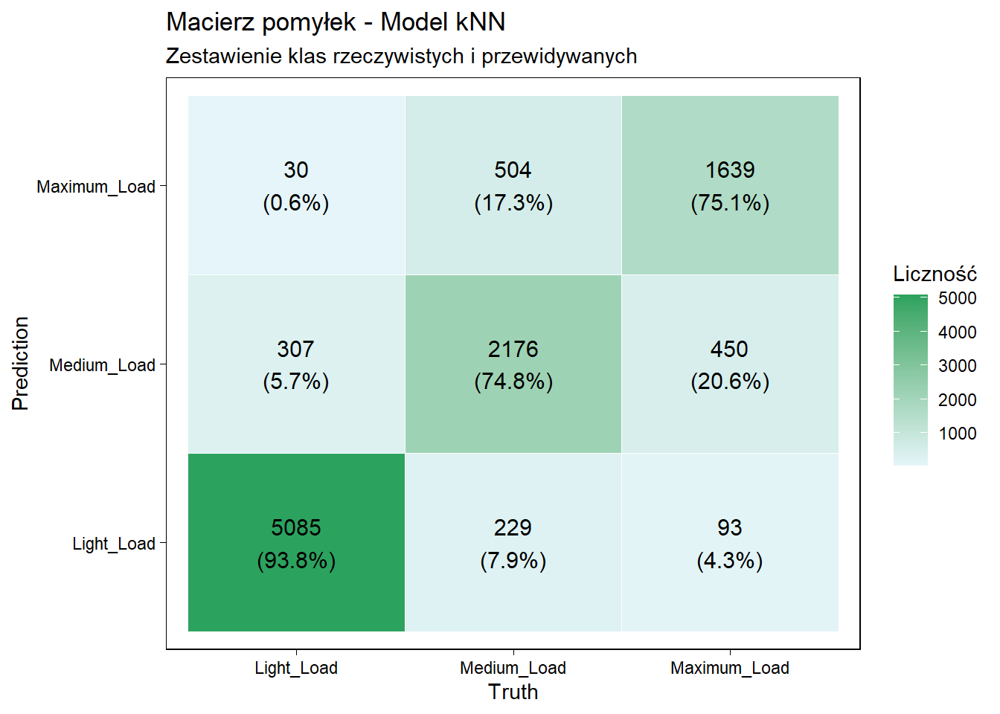
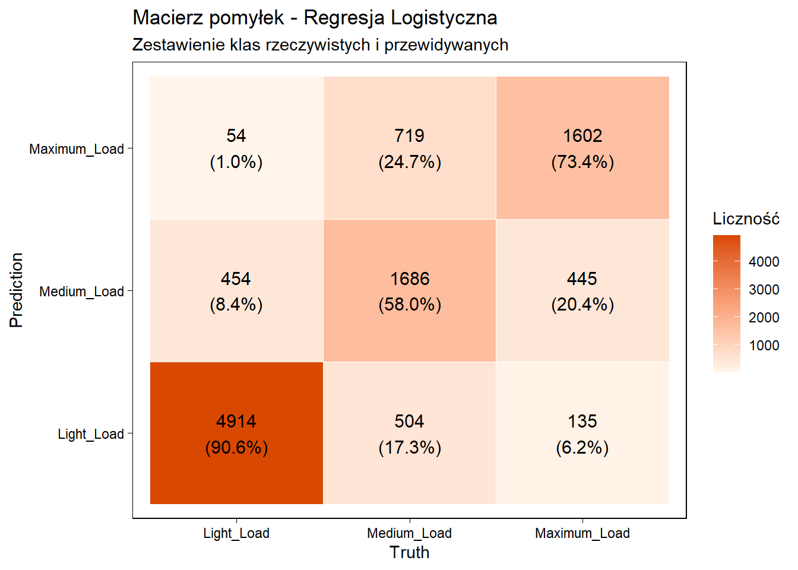
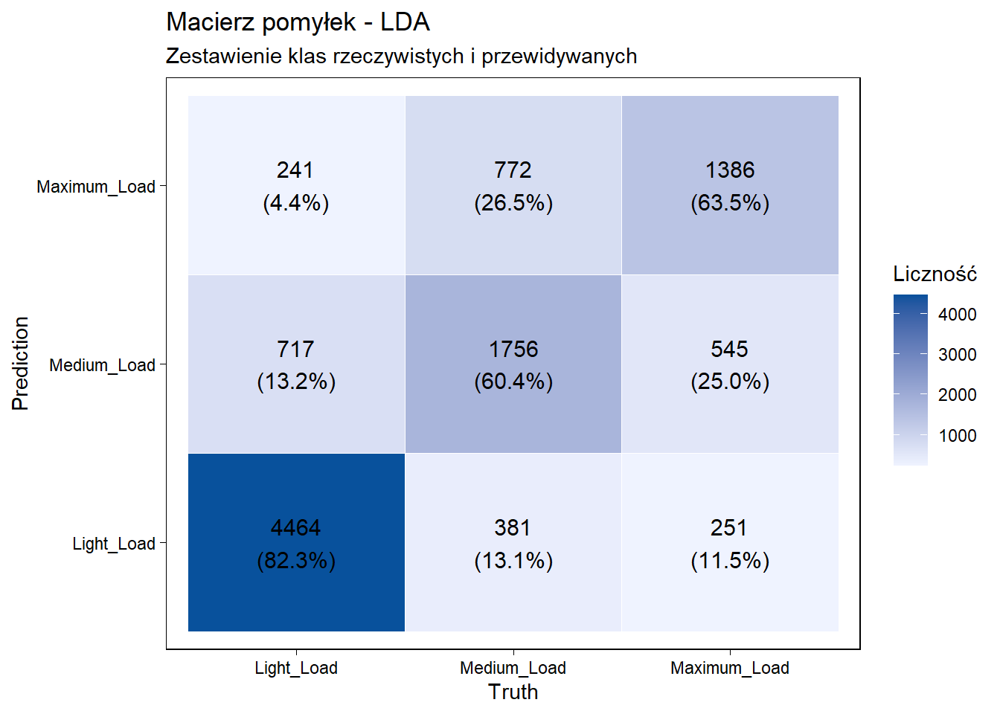
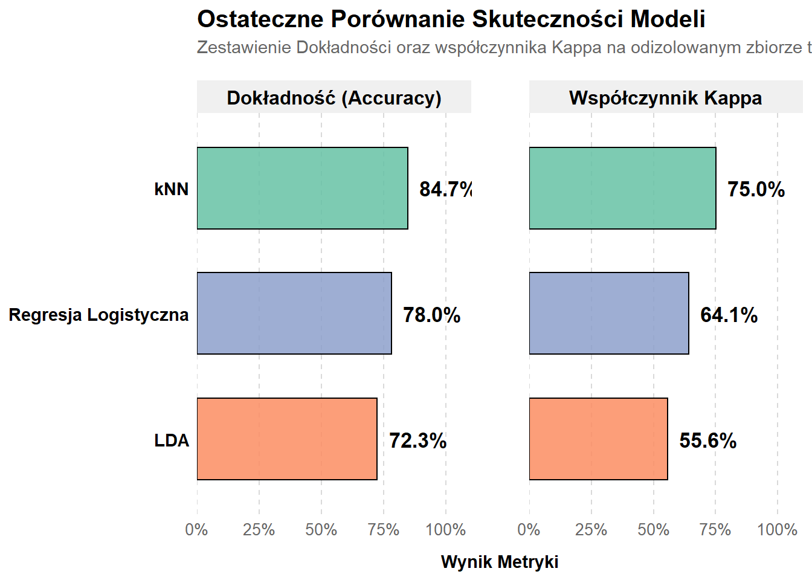

Analiza i Klasyfikacja Zużycia Energii w Hucie Stali
1. Wstęp
Celem naszego projektu jest zbudowanie zoptymalizowanych modeli klasyfikacyjnych, które pozwolą na rozpoznanie i klasyfikację bieżącego stanu obciążenia energetycznego “Load_Type” w hucie stali. Właściwa identyfikacja profilu obciążenia w czasie rzeczywistym jest kluczowa dla optymalizacji kosztów oraz zapobiegania awariom sieci przemysłowej. W ramach analizy wykorzystałyśmy techniki uczenia maszynowego w ekosystemie tidymodels, kładąc szczególny nacisk na inżynierię cech (Feature Engineering), w tym transformację trygonometryczną zmiennych czasowych w celu uwzględnienia ich cyklicznej natury, zapobieganie wyciekowi danych (Data Leakage) oraz redukcję wymiarowości za pomocą algorytmu PCA.
2. EDA
W pierwszej fazie projektu dokonałyśmy wczytania danych, sprawdziłyśmy zbilansowanie klas oraz wstępnie przeanalizowałyśmy wzajemne zależności. Zmienna celu “Load Type” została przekształcona na typ kategoryczny uporządkowany. Ponadto, ze względu na specyfikę danych z czujników przemysłowych, do zbadania współzależności wykorzystano korelację rang Spearmana, która w przeciwieństwie do korelacji Pearsona jest odporna na relacje nieliniowe oraz wartości odstające (outliery).
Interpretacja balansu klas: Wykres wskazuje na asymetrię rozkładu, gdzie klasa Light_Load przeważa nad innymi klasami. W obliczu tego niezrównoważonego rozkładu, w procesie modelowania zastosowałyśmy stratyfikację, czyli podział, który zachowuje proporcje klas, aby zapobiec faworyzowaniu klasy dominującej.

Interpretacja macierzy korelacji Spearmana: Macierz korelacji ujawnia silne powiązania między predyktorami, co sugeruje występowanie zjawiska współliniowości. Ze względu na nieliniowy charakter tych zależności wybrałyśmy korelację Spearmana. Aby zredukować redundancję danych i zwiększyć stabilność modeli, w dalszym etapie zdecydowałyśmy się na zastosowanie analizy głównych składowych.

Interpretacja rozkładów zmiennych numerycznych (wykresy pudełkowe): Analizę wizualną ograniczyłyśmy w tym przypadku do czterech kluczowych predyktorów, gdyż pozostałe zmienne wykazują bardzo silną korelację, co prowadzi do niemal identycznych struktur rozkładów i nie wnosi dodatkowej informacji. Wybrane wykresy uwidaczniają one obecność licznych wartości odstających oraz istotne różnice w skalach wartości pomiędzy zmiennymi. Potwierdza to konieczność przeprowadzenia standaryzacji i normalizacji danych przed przekazaniem ich do modeli wrażliwych na dystans euklidesowy, takich jak kNN.

Interpretacja wykresu gęstości: Pokazują one zróżnicowane kształty rozkładów dla poszczególnych klas obciążenia. Widoczne nałożenie się rozkładów sugeruje, że klasy nie są separowalne w oparciu o pojedyncze zmienne, co uzasadnia zastosowanie metod wielowymiarowych.
Analiza zbilansowania klas
Wykres balansu klas ukazuje niezbilansowanie zbioru - klasa “Light_Load” zdecydowanie dominuje, poczas gdy krytyczna biznesowo klasa “Maximum_Load” jest najmniej liczna. Jakie kroki w związku z tym podjęłyśmy: 1. Stratyfikacja: Zastosowano podział strata = Load_Type, co gwarantuje, że zbiór testowy i treningowy zachowają identyczne proporcje klas. 2. Ponieważ macierz korelacji ujawnia silną współliniowość predyktorów postanowiłyśmy zastosować PCA. 3. Wykresy rozkładów pokazały drastyczne różnice w rzędach wielkości między zmiennymi. Przed podaniem danych do modeli wymusza to na nas wykonanie normalizacji.
Przygotowujemy dane do utworzenia naszych modeli, na początku dzielimy nasze dane na zbiór uczący i testowy, każdy model będziemy uczyć na tym samym wylosowanym modelu uczącym i testować go na tym samym testowym.
Zdecydowałyśmy się na podzielenie 70% uczący i 30% testowy. Następnie wizualizujemy strukturę danych za pomocą rzutu PCA.
Analizujemy wstępnie ręcznie nasze dane.


Na wykresie struktury zbioru treningowego widać, że mamy do czynienia z danymi o wysokim stopniu złożoności. Wartości predyktorów cechują się dużą zmiennością, a granice między typami obciążenia nie są wyraźnie zarysowane - klasy wykazują silną tendencję do nakładania się na siebie, tworząc nieregularne i poszarpane struktury w przestrzeni wielowymiarowej. Tak duże rozmycie klas stanowi wyzwanie dla klasycznych algorytmów liniowych, ponieważ oznacza, że idealna separacja klas może być matematycznie nieosiągalna, co pozwala nam świadomie podejść do modelowania: nie oczekujemy uzyskania dokładności w okolicy 100%.
3. kNN
Aby zrobić kNN, decydujemy się na downsampling zbioru treningowego do 40%, decyzja ta wynika z tego, że algorytm jest wymagający obliczeniowo. Za pomocą 5-krotnej kroswalidacji dostroiłyśmy optymalną liczbę sąsiadów, funkcję wagową oraz odpowiednią liczbę składowych PCA. Używamy też recipe, zmieniamy status tygodnia na system binarny, pozbywając się przy tym szumu płynącego z pojedynczych dni roboczych.
W procesie przygotowywania danych zastosowano transformację trygonometryczną zmiennej NSM (sekundy od północy). Dzięki przekształceniu jej na składowe sinus i cosinus, model poprawnie interpretuje cykliczność doby, rozumiejąc, że godzina 23:59 jest sąsiedztwem godziny 00:00. Pozwoliło to wyeliminować błąd interpretacji odległości, który występowałby przy potraktowaniu czasu jako zwykłej rosnącej liczby.


Interpretacja
Najlepszą konfiguracją okazały się funkcja wagowa gaussian, liczba sąsiadów k=13, liczba składowych PCA num_comp=3. Szczytowa skuteczność kroswalidacji dla powyższych parametrów wynosi około 84.7%. Model wykazuje również dużą stabilność w przypadku Maximum_Load (74.9%), co w kontekście pracy huty stali jest kluczowe dla zachowania bezpieczeństwa energetycznego. Zastosowanie transformacji trygonometrycznej pozwoliło modelowi lepiej zrozumieć cykliczność doby, co bezpośrednio przełożyło się na wyższą jakość predykcji niż w klasycznych podejściach liniowych.
4. Wielomianowa Regresja Logistyczna
Aby uniknąć przeuczenia z powodu dużej liczby mocno skorelowanych zmiennych. Wykorzystałyśmy więc pakiet glmnet, który samodzielnie dostraja parametry regularyzacji - siły nakładanej kary oraz balansu między metodami eliminacji Lasso i Ridge. Zastosowanie tego mechanizmu sprawiło, że algorytm samoczynnie wyzerował wagi zmiennych będących wyłącznie szumem. Ponownie jak w modelu kNN, również tutaj zastosowano transformację cykliczną zmiennej czasowej NSM na składowe sinus i cosinus, co umożliwiło modelom liniowym lepsze dopasowanie do dobowego profilu pracy huty.

Interpretacja
Algorytm osiąga skuteczność na poziomie około 78%, przy współczynniku Kappa wynoszącym 0,64. Wartość współczynnika Kappa wskazuje na istotną zgodność predykcji, wykraczającą znacząco poza przypadkowość. Mimo to model nadal napotyka trudności w precyzyjnym rozróżnieniu stanów Medium od Maximum Load. Rozmycie klasyfikacji między tymi dwiema klasami sugeruje, że różnice między średnim a skrajnym zużyciem energii są subtelne. Stanowi to empiryczny dowód na to, że zależności między odczytami z czujników a typem obciążenia mają charakter silnie nieliniowy. Klasyczny model, opierający się na budowaniu liniowych granic decyzyjnych, napotyka naturalne bariery w tak złożonym środowisku przemysłowym.
5. LDA
Ostatnim modelem jest wariant deterministyczny. Model LDA nie posiada hiperparametrów i nie wymaga strojenia, ponieważ opiera się na wyliczaniu macierzy kowariancji i rozkładzie prawdopodobieństw. Tutaj również zastosowałyśmy transformację trygonometryczną zmiennej czasowej NSM. Na podstawie wcześniejszej analizy wykresu osypiskowego, przypisałyśmy do modelu na sztywno cztery główne składowe PCA.

Interpretacja
Model LDA osiągnął dokładność rzędu 72.3%. Jest to wynik nieco niższy niż w przypadku poprzednich modeli. Wartość 0.56 współczynnika Kappa pokazuje, że LDA w warunkach silnej nieliniowości danych przemysłowych działo jako poprawny model bazowy, jednak wykazuje małą elastyczność w porównaniu do modeli opartych na sąsiedztwie. Zastosowane rzutowania PCA (4 składowe) oraz transformacja trygonometryczna NSM pozwoliła zminimalizować ryzyko niestabilności numerycznej macierzy kowariancji. Analiza macierzy pomyłek wskazuje, że LDA wykazuje tendencję do nadmiernej klasyfikacji stanów jako Maximum Load, co w kontekście biznesowym huty przekłada się na wyższą czułość kosztem precyzji.
6. Podsumowanie
Wszystkie wyuczone modele zostały ostatecznie przetestowane na tym samym zbiorze testowym. Naszymi głównymi miarami porównawczymi były ogólna dokładność oraz macierze pomyłek, dzięki którym mogłyśmy bezpośrednio zweryfikować, czy modele nie omijają krytycznej biznesowo klasy “Maximum_Load”.

Ostateczne zestawienie skuteczności modeli na izolowanym zbiorze testowy, (30% danych) wskazuje na przewagę algorytmu k-Najbliższych Sąsiadów (kNN), który osiągnął najwyższą ogólną dokładność na poziomie 84.7% (współczynnik Kappa: 0,75). Pozostałe modele zaprezentowały słabszą skuteczność - Wielomianowa Regresja Logistyczna 78.0% (Kappa: 0,64), natomiast Liniowa Analiza Dyskryminacyjna 72.3% (Kappa: 0,56).
Wnioski: Taka dysproporcja stanowi naturalną konsekwencję matematycznej natury zastosowanych metod i bezpośrednio odzwierciedla nasze dane. Poszczególne klasy obciążeń energetycznych mocno na siebie zachodzą, tworząc nieregularne, poszarpane skupiska. Obie metody, które uzyskały niższe wyniki - Regresja Logistyczna oraz LDA - należą do rodziny modeli liniowych. Ich zadaniem jest poszukiwanie prostej granicy decyzyjnej, która podzieli przestrzeń. W środowisku naszych danych algorytmy liniowe zatrzymują się na około 70%. Nie są one w stanie dopasować się do zawiłości tych danych. Zupełnie inaczej zachowuje się algorytm kNN, który z definicji jest modelem nieliniowym. Jego działanie opiera się na analizie najbliższego sąsiedztwa wokół nowej obserwacji. Dzięki swojej elastyczności kNN potrafi izolować mniejsze grupy danych. Przewaga tego algorytmu w ostatecznym rankingu jest więc w pełni logiczna i potwierdza to, że zależności sterujące poborem prądu w badanej hucie mają charakter nieliniowy.